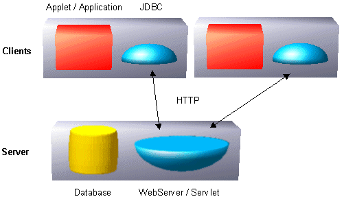
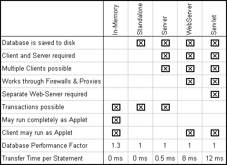

Hypersonic SQL has three operating modes:
In the in-memory mode, all data (indexes and data records) are kept in the main memory. That means the size of the database is limited by the amount of available memory. Each (general) record will need about 500 bytes of memory. The reasons why Hypersonic SQL does support this mode are:
The JDBC URL (see also below) for the In-Memory mode is:
jdbc:hsqldb:.
In the standalone mode, the changes to the database (currently the uncompressed SQL statements) are written to disk. Tables can be created so that the records are stored on disk and only some records are cached in memory. This is done by creating tables using 'CREATE CACHED TABLE' instead of 'CREATE TABLE'. This allows to use big tables where the records need too much space to fit into memory. Indexes of cached tables are also saved to disk, so the size of the database is not limited by the main memory. Access to cached tables is slower than access to tables that are in memory.
Before closing the database an SQL script describing the current state of the database is written to disk. The log file is then deleted. When starting Hypersonic SQL the database is loaded from disk (the SQL script is executed). If the database crashes (for example using Ctrl+C or power loss) no information is lost. This is because the next time it is started, it recovers automatically to the last state using the log file.
In this mode, only one application can access a database at a time. To access the same database at the same time from multiple JVM or computers the Client/Server version must be used.
The JDBC URL for the Standalone mode is:
jdbc:hsqldb:test
where test is the database file name. Another example (Windows) is:
jdbc:hsqldb:c:\db\test

The database is not running in the same Virtual Machine as the application, but as a server in an own process or on a separate computer. This operating mode is similar to 'big' databases; except that Hypersonic SQL supports also the standardized HTTP protocol for communication between client and server. Like this it is possible to connect via Internet or Intranet to the database. It is not necessary that the client computers have access to the file system of the server. Because the HTTP protocol is used, it is also possible to connect to the database through firewalls and proxy servers.
There are three Client / Server version included in the download: The Server, the WebServer and the Servlet.
This version communicates with the client over TCP/IP and uses a proprietary protocol. There is a connection for each client. This is very fast, but normally does not work over Internet (through to proxy servers and firewalls).
The JDBC URL is:
jdbc:hsqldb:hsqldb://hsqldbsrv
where 'hsqldbsrv' is the computer name. To run more than one server on
one computer, different port numbers must be used:
jdbc:hsqldb:hsqldb://hsqldbsrv:9002
The local computer is called 'localhost'.
This is a small and simple web-server that can transfer files and also execute queries against the database.
An example URL is:
jdbc:hsqldb:http://websrv
The database is run inside a database Servlet. Servlets can be run on almost any web-server now. The source code for the servlet is also included. It is compatible to the Java Servlet API and tested with the jsdk 2.1.
The URL for the Servlet mode is the same as for the WebServer mode.
All this modes can be combined in a single application. It is possible that a application uses for example all four modes at the same time, this are then four different databases. Here is some example code how this can be done:
c1=DriverManager.getConnection("jdbc:hsqldb:.","sa","");
c2=DriverManager.getConnection("jdbc:hsqldb:test","sa","");
c3=DriverManager.getConnection("jdbc:hsqldb:http://dbserver","sa","");
c4=DriverManager.getConnection("jdbc:hsqldb:hsqldb://dbserver","sa","");
In this example are three connections opened: c1 for the in-memory database, c2 opens the local database 'test' and c3 connects to the computer 'dbserver' using the HTTP protocol. c4 connects also to dbserver, but using the faster Hypersonic SQL protocol.
Each mode has other features and negative and positive sides:
